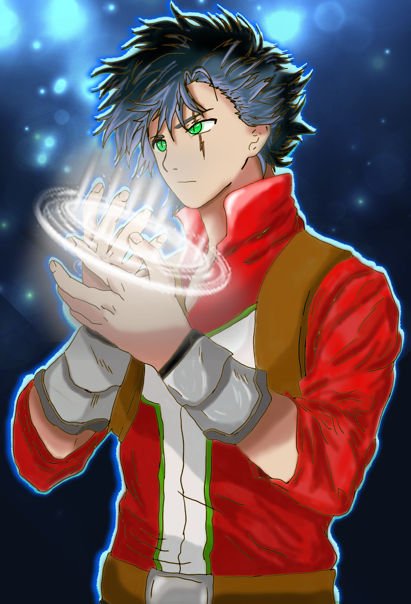

CONOCE A LOS PERSONAJES

HERSHEL
- Guardián de la Oscuridad
- "Portador de la Marca Maldita"
- Su Habilidad con la espada es increíble
- Lucha para huir de su pasado

GARRET
- Guardián del Viento
- Absolutamente divertido
- Su magia es realmente única
- Tiene debilidad por la historia y cosas raras
JILLIAN
Ryun (El Guardián) atesora incontables secretos y posee resistencia a los yokais. Encargado de proteger a la elegida, atado por un juramento de honor.
RAY
Ryun (El Guardián) atesora incontables secretos y posee resistencia a los yokais. Encargado de proteger a la elegida, atado por un juramento de honor.
SOPHIE
Ryun (El Guardián) atesora incontables secretos y posee resistencia a los yokais. Encargado de proteger a la elegida, atado por un juramento de honor.
ROY
Ryun (El Guardián) atesora incontables secretos y posee resistencia a los yokais. Encargado de proteger a la elegida, atado por un juramento de honor.
KARAN
Ryun (El Guardián) atesora incontables secretos y posee resistencia a los yokais. Encargado de proteger a la elegida, atado por un juramento de honor.
NADIA
Ryun (El Guardián) atesora incontables secretos y posee resistencia a los yokais. Encargado de proteger a la elegida, atado por un juramento de honor.
QUIONA
Ryun (El Guardián) atesora incontables secretos y posee resistencia a los yokais. Encargado de proteger a la elegida, atado por un juramento de honor.